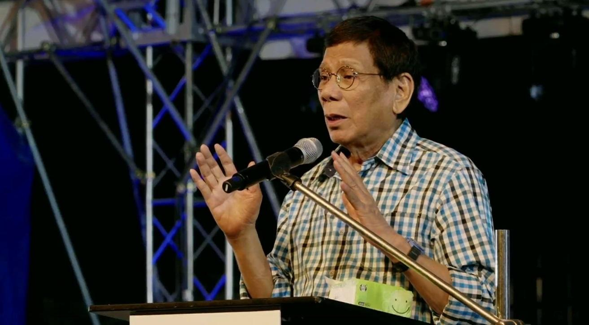
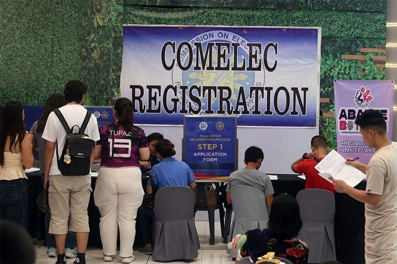

<html lang="en"></html>
<head>
    <meta charset="UTF-8">
    <meta name="viewport" content="width=>, initial-scale=1.0">
    <title>Articles</title>
    <link rel="stylesheet" href="style.css">
    <link rel="icon" href="logo.png" type="image/logo.png">
</head>
<body>
    <header>
        
    <ul>
        <li class="head"><a href="index.html" class = "link">Home</a></li>
        <li class="head"><a href="contact.html" class = "link">Contact</a></li>
        <li class="head"><a href="about.html" class = "link">About</a></li>
    </ul>

    <h1>NEWS</h1>

    
</header>
<section class="whole">
<div class="bar" style="margin-top: -20;">
    <div id="menu">
        <section class="feature-box sec_1">
            <li class="nav"><a href="news.html" class="link"><center>News</center></a></li>
        </section>
        <section class="feature-box sec_1">
            <li class="nav"><a href="weather.html" class = "link"><center>Weather</center></a></li>
        </section>
        <section class="feature-box sec_1">
            <li class="nav"><a href="sports.html" class = "link"><center>Sports</center></a></li>
        </section>
        <section class="feature-box sec_1">
            <li class="nav"><a href="editorial.html" class = "link"><center>Editorial</center></a></li>
        </section>
        <section class="feature-box sec_1">
            <li class="nav"><a href="entertainment.html" class = "link"><center>Entertainment</center></a></li>
        </section>
    </div>
    </div>
    <section class-="news">
          
    

 
<div class="news">

<h1 class="news_1">Duterte, the former president will run for Davao City mayor anew</h1>
<p class="article_duterte">
    Rodrigo Duterte, the former president, has chosen to run for office once more. Before taking office 
    as president of the Philippines in 2016, he served as mayor of Davao City for a number of years. This time, 
    he hopes to retake that position. Additionally, Duterte declared that he would run, perhaps in partnership with 
    his son, Sebastian Duterte, the current mayor. In response to requests for him to run for senator in the 2025 midterm 
    elections, Duterte stated that he is too old to undertake a national campaign. The elder Duterte, Sebastian,
     and Davao City Representative Paolo Duterte are all planning to seek for Senate seats, according to a statement made 
     earlier by his daughter, Vice President Sara Duterte. Duterte, however, refuted this, claiming that Sara was merely kidding.
     "Anong gagawin namin sa Senate...Anong gagawin namin doon?" he exclaimed.Additionally, he asserted that he is "not inclined" 
     to get back into politics, claiming that after his term ends in 2022, he will no longer have the financial means or political 
     capital to do so. "Hindi na ako babalik ng politika. Tapos na po ako. Laos na ako. Wala na akong panggastos, wala na lahat. Ang 
     aiwan sa akin siguro yabang," Duterte stated.
</p>
<h2>SOURCE: <a href="https://www.gmanetwork.com/news/topstories/regions/922718/duterte-open-to-running-for-davao-city-mayor-in-eleksyon-2025/story/" class="link">GMA</a></h2>
</div>
<section class="news">
    
    <h1 class="news_1">Comelec: Surveys from 2025 anticipate 20 million Gen Z voters.</h1>  
    <p class="article_duterte">
        The Commission on Elections (Comelec) estimates that 20 million members of Generation Z in the Philippines would vote in the midterm
        elections of 2025. The Gen Z demographic is defined as those who were born between 1997 and 2012. "We anticipate that there will be
        around 20 million Gen Z members among the Kabataan, barangay and SK (Sangguniang Kabataan) voters, na kailangan nating isama yung 
        15 to 17 years old, ang botante ay almost 24 million," Comelec Chairperson George Erwin Garcia told the media on Saturday. 
        13 million, or 19%, were Gen Z, according to statistics gathered by GMA Integrated News Research. According to Garcia, the youth
        vote is crucial. "Yung votes nila will matter. Ganyan kahalaga ang boto nila sapagkat sila ang magdidikta ng kinabukasan ng ating
        bayan," he stated.
    </p>
    <h2>SOURCE: <a href="https://www.gmanetwork.com/news/topstories/nation/922724/comelec-20-million-gen-z-voters-expected-in-2025-polls/story/?top_picks&order=2 " class="link">GMA</a></h2>
</section>
<section class="news">
    
    <h1 class="news_1">A residential-commercial district in Taytay, Rizal, is struck by fire.</h1>  
    <p class="article_duterte">
        On Saturday night, a fire started in a residential-commercial district in Taytay, Rizal. Before 9 p.m.,
        the fire started. and made it to the second alarm before being extinguished around midnight, according to the Bureau
        of Fire Protection (BFP). About 20 residences were impacted, according to the BFP, and the damaged area was located at 
        the intersection of Naval Street and Rizal Avenue, as reported by Olan Bola on Super Radyo dzBB. It noted that the fire did
        not injure anyone. The cause of the fire and the projected cost of the property damage are still being investigated. —KG,
        Integrated News on GMA.

    <h2>
        SOURCE: <a href="https://www.gmanetwork.com/news/topstories/regions/922727/fire-hits-residential-commercial-area-in-taytay-rizal/story/" class="link">GMA</a>
    </h2>
</section>
    
</section>
</section>
<footer>
    <p><center>&copy Dyurnal-ist 2024 All rights reserved</center></p>
</footer>

</body>
</html>